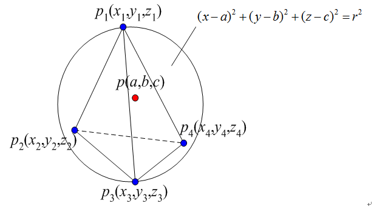

広告
4面体の外心
4面体の外接球の中心座標と半径を計算します。

外接球の式に節点の座標を代入すると次式が得られます。
\[
\left\{
\begin{aligned}
(a-x_1)^2+(b-y_1)^2+(c-z_1)^2&=r^2\\
(a-x_2)^2+(b-y_2)^2+(c-z_2)^2&=r^2\\
(a-x_3)^2+(b-y_3)^2+(c-z_3)^2&=r^2\\
(a-x_4)^2+(b-y_4)^2+(c-z_4)^2&=r^2
\end{aligned}
\right.
\]
半径rを消すと
\[
\left\{
\begin{aligned}
(a-x_2)^2+(b-y_2)^2+(c-z_2)^2&=(a-x_1)^2+(b-y_1)^2+(c-z_1)^2\\
(a-x_3)^2+(b-y_3)^2+(c-z_3)^2&=(a-x_1)^2+(b-y_1)^2+(c-z_1)^2\\
(a-x_4)^2+(b-y_4)^2+(c-z_4)^2&=(a-x_1)^2+(b-y_1)^2+(c-z_1)^2
\end{aligned}
\right.
\]
展開して
\[
\left\{
\begin{aligned}
-2x_2a+x_2^2-2y_2b+y_2^2-2z_2c+z_2^2&=-2x_1a+x_1^2-2y_1b+y_1^2-2z_1c+z_1^2\\
-2x_3a+x_3^2-2y_3b+y_3^2-2z_3c+z_3^2&=-2x_1a+x_1^2-2y_1b+y_1^2-2z_1c+z_1^2\\
-2x_4a+x_4^2-2y_4b+y_4^2-2z_4c+z_4^2&=-2x_1a+x_1^2-2y_1b+y_1^2-2z_1c+z_1^2
\end{aligned}
\right.
\]
係数ごとにまとめて
\[
\left\{
\begin{aligned}
2(x_1-x_2)a+2(y_1-y_2)b+2(z_1-z_2)c&=x_1^2-x_2^2+y_1^2-y_2^2+z_1^2-z_2^2\\
2(x_1-x_3)a+2(y_1-y_3)b+2(z_1-z_3)c&=x_1^2-x_3^2+y_1^2-y_3^2+z_1^2-z_3^2\\
2(x_1-x_4)a+2(y_1-y_4)b+2(z_1-z_4)c&=x_1^2-x_4^2+y_1^2-y_4^2+z_1^2-z_4^2
\end{aligned}
\right.
\]
ここで、3元1次連立方程式 の解は次式で与えられました。
\[
\left\{
\begin{aligned}
a_1x+b_1y+c_1z&=d_1\\
a_2x+b_2y+c_2z&=d_2\\
a_3x+b_3y+c_3z&=d_3
\end{aligned}
\right.
\]
\[
\begin{aligned}
x&=\frac{b_1c_2d_3+b_2c_3d_1+b_3c_1d_2-b_3c_2d_1-b_2c_1d_3-b_1c_3d_2}
{a_1b_2c_3+a_2b_3c_1+a_3b_1c_2-a_3b_2c_1-a_2b_1c_3-a_1b_3c_2}\\
y&=\frac{a_1d_2c_3+a_2d_3c_1+a_3d_1c_2-a_3d_2c_1-a_2d_1c_3-a_1d_3c_2}
{a_1b_2c_3+a_2b_3c_1+a_3b_1c_2-a_3b_2c_1-a_2b_1c_3-a_1b_3c_2}\\
z&=\frac{a_1b_2d_3+a_2b_3d_1+a_3b_1d_2-a_3b_2d_1-a_2b_1d_3-a_1b_3d_2}
{a_1b_2c_3+a_2b_3c_1+a_3b_1c_2-a_3b_2c_1-a_2b_1c_3-a_1b_3c_2}
\end{aligned}
\]
従って、今回計算する式に当てはめると
\[
\begin{aligned}
a_1&=2(x_1-x_2),\ b_1=2(y_1-y_2),\ c_1=2(z_1-z_2),\ d_1=x_1^2-x_2^2+y_1^2-y_2^2+z_1^2-z_2^2\\
a_2&=2(x_1-x_3),\ b_2=2(y_1-y_3),\ c_2=2(z_1-z_3),\ d_2=x_1^2-x_3^2+y_1^2-y_3^2+z_1^2-z_3^2\\
a_3&=2(x_1-x_4),\ b_3=2(y_1-y_4),\ c_3=2(z_1-z_4),\ d_3=x_1^2-x_4^2+y_1^2-y_4^2+z_1^2-z_4^2
\end{aligned}
\]
これを解くと次式が導かれます。
分母
\[
\begin{aligned}
&a_1b_2c_3+a_2b_3c_1+a_3b_1c_2-a_3b_2c_1-a_2b_1c_3-a_1b_3c_2\\
&=8\bigl(
x_1y_3z_4+x_1y_4z_2+x_1y_2z_3+x_2y_1z_4+x_2y_3z_1+x_2y_4z_3\\
&\qquad+x_3y_1z_2+x_3y_4z_1+x_3y_2z_4+x_4y_1z_3+x_4y_2z_1+x_4y_3z_2\\
&\qquad-x_1y_3z_2-x_1y_2z_4-x_1y_4z_3-x_2y_3z_4-x_2y_1z_3-x_2y_4z_1\\
&\qquad-x_3y_4z_2-x_3y_1z_4-x_3y_2z_1-x_4y_2z_3-x_4y_1z_2-x_4y_3z_1
\bigr)
\end{aligned}
\]
x座標の分子
\[
\begin{aligned}
&b_1c_2d_3+b_2c_3d_1+b_3c_1d_2-b_3c_2d_1-b_2c_1d_3-b_1c_3d_2\\
&=4\bigl(
+y_2z_3x_1^2+y_3z_4x_1^2+y_4z_2x_1^2+y_3z_1x_2^2+y_4z_3x_2^2+y_1z_4x_2^2\\
&\qquad+y_1z_2x_3^2+y_2z_4x_3^2+y_4z_1x_3^2+y_2z_1x_4^2+y_3z_2x_4^2+y_1z_3x_4^2\\
&\qquad+y_2z_3y_1^2+y_3z_4y_1^2+y_4z_2y_1^2+y_3z_1y_2^2+y_4z_3y_2^2+y_1z_4y_2^2\\
&\qquad+y_1z_2y_3^2+y_2z_4y_3^2+y_4z_1y_3^2+y_2z_1y_4^2+y_3z_2y_4^2+y_1z_3y_4^2\\
&\qquad+y_2z_3z_1^2+y_3z_4z_1^2+y_4z_2z_1^2+y_3z_1z_2^2+y_4z_3z_2^2+y_1z_4z_2^2\\
&\qquad+y_1z_2z_3^2+y_2z_4z_3^2+y_4z_1z_3^2+y_2z_1z_4^2+y_3z_2z_4^2+y_1z_3z_4^2\\
&\qquad-y_3z_2x_1^2-y_4z_3x_1^2-y_2z_4x_1^2-y_1z_3x_2^2-y_3z_4x_2^2-y_4z_1x_2^2\\
&\qquad-y_2z_1x_3^2-y_4z_2x_3^2-y_1z_4x_3^2-y_1z_2x_4^2-y_2z_3x_4^2-y_3z_1x_4^2\\
&\qquad-y_3z_2y_1^2-y_4z_3y_1^2-y_2z_4y_1^2-y_1z_3y_2^2-y_3z_4y_2^2-y_4z_1y_2^2\\
&\qquad-y_2z_1y_3^2-y_4z_2y_3^2-y_1z_4y_3^2-y_1z_2y_4^2-y_2z_3y_4^2-y_3z_1y_4^2\\
&\qquad-y_3z_2z_1^2-y_4z_3z_1^2-y_2z_4z_1^2-y_1z_3z_2^2-y_3z_4z_2^2-y_4z_1z_2^2\\
&\qquad-y_2z_1z_3^2-y_4z_2z_3^2-y_1z_4z_3^2-y_1z_2z_4^2-y_2z_3z_4^2-y_3z_1z_4^2
\bigr)
\end{aligned}
\]
y座標の分子
\[
\begin{aligned}
&a_1d_2c_3+a_2d_3c_1+a_3d_1c_2-a_3d_2c_1-a_2d_1c_3-a_1d_3c_2\\
&=4\bigl(
+x_4z_3x_1^2+x_3z_2x_1^2+x_2z_4x_1^2+x_3z_4x_2^2+x_4z_1x_2^2+x_1z_3x_2^2\\
&\qquad+x_2z_1x_3^2+x_1z_4x_3^2+x_4z_2x_3^2+x_1z_2x_4^2+x_2z_3x_4^2+x_3z_1x_4^2\\
&\qquad-x_2z_3x_1^2-x_3z_4x_1^2-x_4z_2x_1^2-x_4z_3x_2^2-x_3z_1x_2^2-x_1z_4x_2^2\\
&\qquad-x_3z_2x_4^2-x_2z_1x_4^2-x_1z_3x_4^2-x_1z_2x_3^2-x_2z_4x_3^2-x_4z_1x_3^2\\
&\qquad+x_1z_2y_4^2+x_2z_3y_4^2+x_3z_1y_4^2+x_3z_4y_2^2+x_4z_1y_2^2+x_1z_3y_2^2\\
&\qquad+x_2z_1y_3^2+x_1z_4y_3^2+x_4z_2y_3^2+x_4z_3y_1^2+x_3z_2y_1^2+x_2z_4y_1^2\\
&\qquad-x_2z_3y_1^2-x_3z_4y_1^2-x_4z_2y_1^2-x_4z_3y_2^2-x_3z_1y_2^2-x_1z_4y_2^2\\
&\qquad-x_1z_2y_3^2-x_2z_4y_3^2-x_4z_1y_3^2-x_2z_1y_4^2-x_1z_3y_4^2-x_3z_2y_4^2\\
&\qquad+x_3z_2z_1^2+x_2z_4z_1^2+x_4z_3z_1^2+x_3z_4z_2^2+x_4z_1z_2^2+x_1z_3z_2^2\\
&\qquad+x_2z_1z_3^2+x_1z_4z_3^2+x_4z_2z_3^2+x_1z_2z_4^2+x_2z_3z_4^2+x_3z_1z_4^2\\
&\qquad-x_1z_2z_3^2-x_2z_4z_3^2-x_4z_1z_3^2-x_3z_2z_4^2-x_2z_1z_4^2-x_1z_3z_4^2\\
&\qquad-x_2z_3z_1^2-x_3z_4z_1^2-x_4z_2z_1^2-x_4z_3z_2^2-x_3z_1z_2^2-x_1z_4z_2^2
\bigr)
\end{aligned}
\]
z座標の分子
\[
\begin{aligned}
&a_1b_2d_3+a_2b_3d_1+a_3b_1d_2-a_3b_2d_1-a_2b_1d_3-a_1b_3d_2\\
&=4\bigl(
+x_2y_3x_1^2+x_3y_4x_1^2+x_4y_2x_1^2+x_4y_3x_2^2+x_3y_1x_2^2+x_1y_4x_2^2\\
&\qquad+x_1y_2x_3^2+x_2y_4x_3^2+x_4y_1x_3^2+x_3y_2x_4^2+x_2y_1x_4^2+x_1y_3x_4^2\\
&\qquad-x_2y_4x_1^2-x_3y_2x_1^2-x_4y_3x_1^2-x_3y_4x_2^2-x_4y_1x_2^2-x_1y_3x_2^2\\
&\qquad-x_2y_1x_3^2-x_4y_2x_3^2-x_1y_4x_3^2-x_1y_2x_4^2-x_2y_3x_4^2-x_3y_1x_4^2\\
&\qquad+x_2y_3y_1^2+x_3y_4y_1^2+x_4y_2y_1^2+x_4y_3y_2^2+x_3y_1y_2^2+x_1y_4y_2^2\\
&\qquad+x_1y_2y_3^2+x_2y_4y_3^2+x_4y_1y_3^2+x_3y_2y_4^2+x_2y_1y_4^2+x_1y_3y_4^2\\
&\qquad-x_2y_4y_1^2-x_3y_2y_1^2-x_4y_3y_1^2-x_3y_4y_2^2-x_4y_1y_2^2-x_1y_3y_2^2\\
&\qquad-x_2y_1y_3^2-x_4y_2y_3^2-x_1y_4y_3^2-x_1y_2y_4^2-x_2y_3y_4^2-x_3y_1y_4^2\\
&\qquad+x_2y_3z_1^2+x_3y_4z_1^2+x_4y_2z_1^2+x_4y_3z_2^2+x_3y_1z_2^2+x_1y_4z_2^2\\
&\qquad+x_1y_2z_3^2+x_2y_4z_3^2+x_4y_1z_3^2+x_3y_2z_4^2+x_2y_1z_4^2+x_1y_3z_4^2\\
&\qquad-x_2y_4z_1^2-x_3y_2z_1^2-x_4y_3z_1^2-x_3y_4z_2^2-x_4y_1z_2^2-x_1y_3z_2^2\\
&\qquad-x_2y_1z_3^2-x_4y_2z_3^2-x_1y_4z_3^2-x_1y_2z_4^2-x_2y_3z_4^2-x_3y_1z_4^2
\bigr)
\end{aligned}
\]
| prev | | | top | | | next |